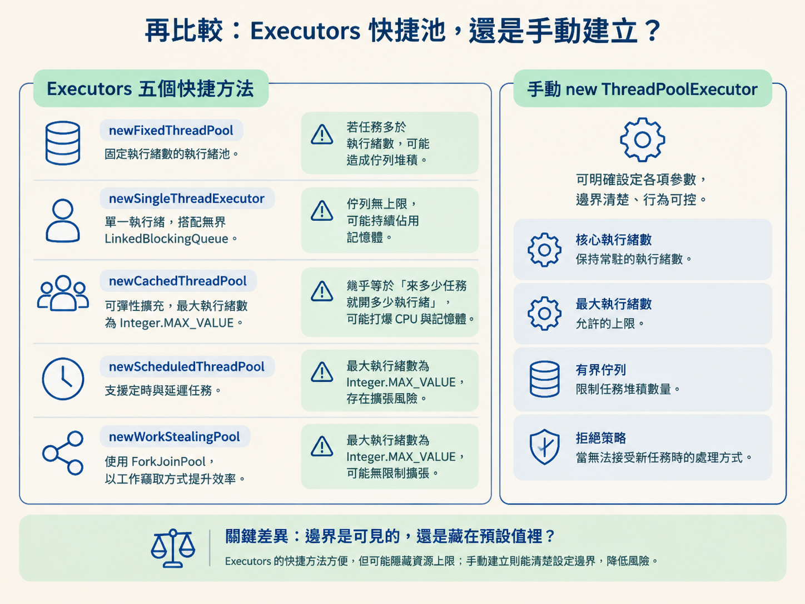

執行緒池就像餐廳的廚房：廚師（執行緒）全在忙，候位區（佇列）也坐滿了，這時又有新客人上門。你不能假裝還有位置，因為任務總會在某個地方付出代價——可能丟掉任務、拖慢提交者，或讓系統繼續吃進工作，直到記憶體和 CPU 一起耗盡。
這一節要做兩個決定。第一，執行緒池滿載時，該採用哪一種拒絕策略？第二，建立執行緒池時，要不要使用 Executors 提供的快捷方法？判斷的核心不是「哪個策略最好」，而是你的任務能不能丟、上游能不能被減速，以及系統是否有清楚的資源上限。
你最後應該能根據「任務能不能丟、要不要對上游回壓」在四種拒絕策略間做選擇，也能說明 Executors 五類快捷池各自的 OOM 陷阱，知道為什麼實務上通常要手動建立 ThreadPoolExecutor。
當執行緒數已達上限、佇列也已經沒有空間時，ThreadPoolExecutor 會呼叫 RejectedExecutionHandler。JDK 提供的四種內建策略，差別不在於「會不會拒絕」而已，而在於拒絕時把壓力轉移給誰。
| 策略 | 滿載時的行為 | 任務會丟嗎 | 適合的情境 |
|---|---|---|---|
AbortPolicy（預設） | 拋出 RejectedExecutionException | 任務不會被執行，但呼叫端必須處理例外 | 任務完整性要求高，而且希望上游立刻知道系統已到瓶頸 |
CallerRunsPolicy | 由提交任務的執行緒自己執行 | 不會丟 | 不能丟資料，且可以接受上游被拖慢 |
DiscardPolicy | 默默丟棄，不拋例外也不執行 | 會丟，而且不會通知你 | 可有可無的非核心任務，例如非關鍵日誌 |
DiscardOldestPolicy | 丟掉佇列最舊、也就是隊頭的任務，再嘗試放入新任務 | 會丟掉舊任務 | 只在意最新資料，例如即時感測器讀數 |
AbortPolicy 是預設值，因為它選擇「快速失敗」。任務沒有被執行是嚴重事件，系統應該讓上層立刻知道，而不是把問題藏起來。呼叫端收到 RejectedExecutionException 後，可以再寫入重試佇列、觸發告警，或交給其他補償機制處理。
CallerRunsPolicy 則把工作退回給提交者。假設主執行緒提交任務時池子已經滿了，主執行緒就必須親自執行這個任務。這會產生一個自然的回壓：提交者忙著處理任務，就沒有辦法繼續高速提交新任務，任務進入執行緒池的速度會慢下來。
它的代價是上游會變慢，但換來任務不會悄悄消失。因此，當資料不能丟、又能接受上游降速時，CallerRunsPolicy 往往很合適。
DiscardPolicy 最省事，卻也最危險：它把任務丟掉，什麼都不說。DiscardOldestPolicy 則是用舊任務換新任務，適合「新資料比舊資料有價值」的情境，但前提是佇列的順序真的代表你想犧牲的對象。

不要先背策略名稱。遇到執行緒池滿載時，先依序問自己以下三個問題。
這個任務丟了，業務會出事嗎？
如果不會，例如只是記錄一筆非關鍵統計日誌，可以考慮 DiscardPolicy。這代表你明確接受資料遺失，並且知道它不會透過例外通知你。
如果任務不能丟，上游被減速可以接受嗎？
如果可以，使用 CallerRunsPolicy。它用上游的執行時間換取任務完整性，透過回壓讓執行緒池有機會消化現有工作。
如果任務不能丟，上游也不能被拖慢呢？
這時可以使用 AbortPolicy，讓提交動作快速失敗，再在捕捉例外的地方做補償，例如寫入重試佇列或發出告警。快速失敗雖然不舒服，但通常比默默遺失任務安全。
這三個問題其實是在確認一條壓力傳遞路徑：壓力可以回到上游嗎？任務可以被捨棄嗎？如果兩者都不行，就必須讓系統明確失敗，不能假裝還能繼續接收。
同一個策略換到不同場景，可能從合理選擇變成事故來源。以下幾種情況尤其要小心。
把 DiscardPolicy 用在支付或下單。問題不只是任務會丟，而是它會丟得無聲無息：沒有例外，也沒有通知。等到對帳時才發現少了幾筆訂單，通常已經太晚。關鍵業務使用 DiscardPolicy，等於把定時炸彈埋進系統。
把 DiscardOldestPolicy 搭配優先級佇列。這個策略丟的是隊頭，但在 PriorityBlockingQueue 裡，隊頭往往正是優先級最高、最應該先處理的任務。結果策略原本想保留新資料，卻反而先犧牲了最重要的工作。
把 CallerRunsPolicy 放在不能被阻塞的主執行緒上。如果任務本身需要執行幾十秒，主執行緒一旦親自下場處理，回應就會被卡住，嚴重時看起來像整個服務假死。回壓本身是優點，但不能把壓力回壓到最不該停下來的那條執行緒。
第二個決策是如何建立執行緒池。Executors 的方法看起來簡短好記，卻把一些重要的邊界藏在預設值裡。這些預設值在小型範例中很方便，在流量不可預測的服務裡，卻可能變成 OOM 或 CPU 耗盡的入口。
| 方法 | 特點 | 主要陷阱 |
|---|---|---|
newFixedThreadPool | 核心執行緒數等於最大執行緒數，池子大小固定 | 使用無界 LinkedBlockingQueue，任務持續堆積時可能 OOM |
newSingleThreadExecutor | 只有一條執行緒，任務依序執行 | 同樣使用無界佇列，消費速度跟不上時有 OOM 風險 |
newCachedThreadPool | 核心執行緒數為 0，最大值為 Integer.MAX_VALUE，閒置 60 秒後回收 | 高併發時可能瞬間建立大量執行緒，耗盡 CPU 與記憶體 |
newScheduledThreadPool | 支援定時與週期性任務，可取代 Timer | 本身不是無界池，但任務設定不當仍可能堆積 |
newWorkStealingPool | 基於 ForkJoinPool，每條執行緒有自己的佇列 | 適合耗時的平行計算，不適合一般阻塞 IO |
阿里開發手冊禁止直接使用 Executors，重點不是反對方便的工具類，而是避免開發者在沒有察覺的情況下使用了過於寬鬆的資源上限。
FixedThreadPool 和 SingleThreadExecutor 使用沒有指定容量的 LinkedBlockingQueue。在 Java 中，它的容量預設是 Integer.MAX_VALUE，實際上等同無界佇列。當消費端處理速度變慢，任務就會一直排隊，最後可能把堆記憶體塞滿並拋出 OutOfMemoryError。
CachedThreadPool 則是另一種極端：最大執行緒數也是 Integer.MAX_VALUE。它幾乎等於對系統承諾「來多少任務就開多少執行緒」，高併發時可能讓 CPU 和記憶體同時被打爆。

因此，實務上更穩妥的做法是手動建立 ThreadPoolExecutor，把執行緒數、佇列容量與拒絕策略全部寫出來：
ThreadPoolExecutor pool = new ThreadPoolExecutor(
4, // 核心執行緒數：由壓測與任務類型決定
16, // 最大執行緒數：明確定義上限，不用 MAX_VALUE
60L, TimeUnit.SECONDS,
new ArrayBlockingQueue<>(200), // 有界佇列：滿了就拒絕，不無限堆積
new CustomThreadFactory("order"),
new ThreadPoolExecutor.CallerRunsPolicy() // 明確選擇拒絕策略
);這段設定的價值，不只是「可以自己調參數」，而是讓系統的邊界變得可見：最多使用多少執行緒、最多排多少任務，以及滿載時要把壓力交給誰，都不再藏在快捷方法的預設值裡。
選拒絕策略時，先問三件事：任務能不能丟？上游能不能被拖慢？如果兩者都不行，是否能接受快速失敗並由上層補償？能丟的非核心任務可用
DiscardPolicy；不能丟且能接受上游變慢，可用CallerRunsPolicy，用回壓保護系統；不能丟又不想拖慢上游，使用AbortPolicy，讓呼叫端接住例外並補償。關鍵任務不要使用兩種 Discard；DiscardOldestPolicy不要搭配優先級佇列；CallerRunsPolicy不要讓不能被阻塞的提交者親自執行長任務。建立執行緒池時，優先手動
new ThreadPoolExecutor：佇列要有界，最大執行緒數要有實際上限，拒絕策略要明確指定，不要把資源邊界交給Executors的預設值。

這一節處理的是傳統執行緒這種昂貴資源：要池化、要限流，也要先想好滿載時如何拒絕。下一節會換個角度看虛擬執行緒：如果執行緒可以便宜得像普通物件，這些管理複雜度還需要保留多少？